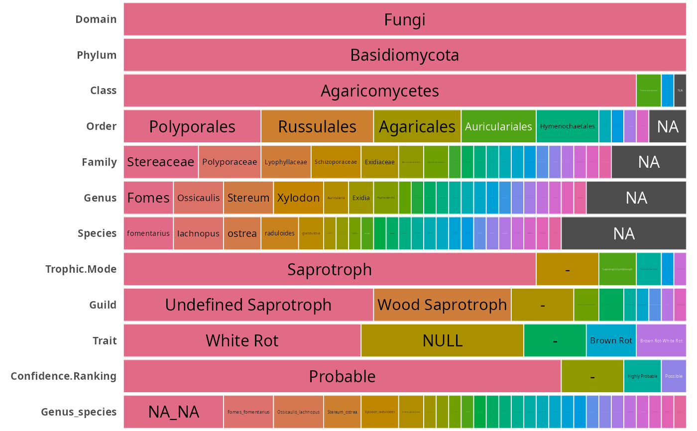
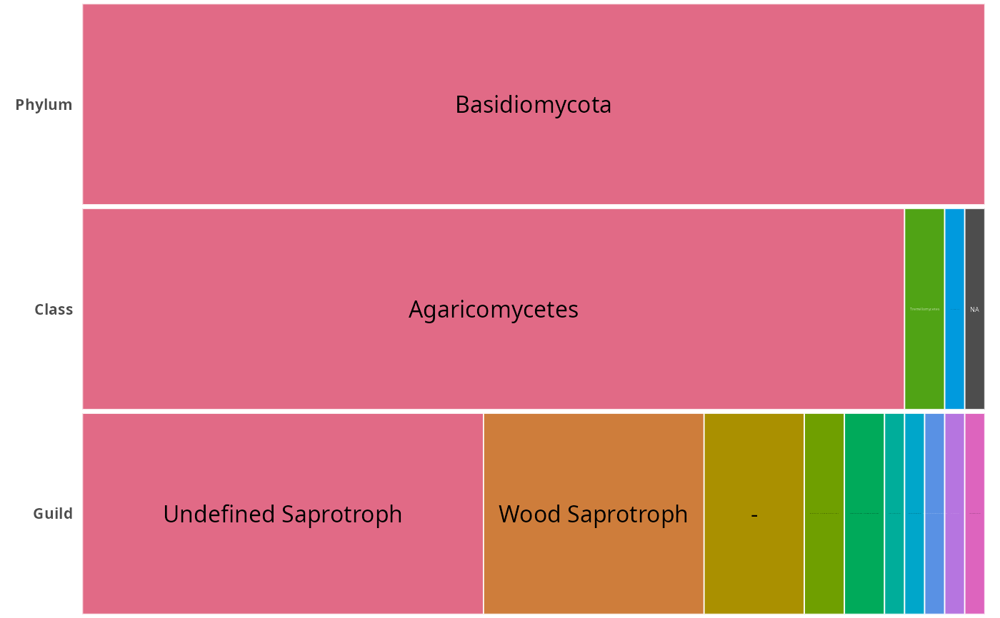
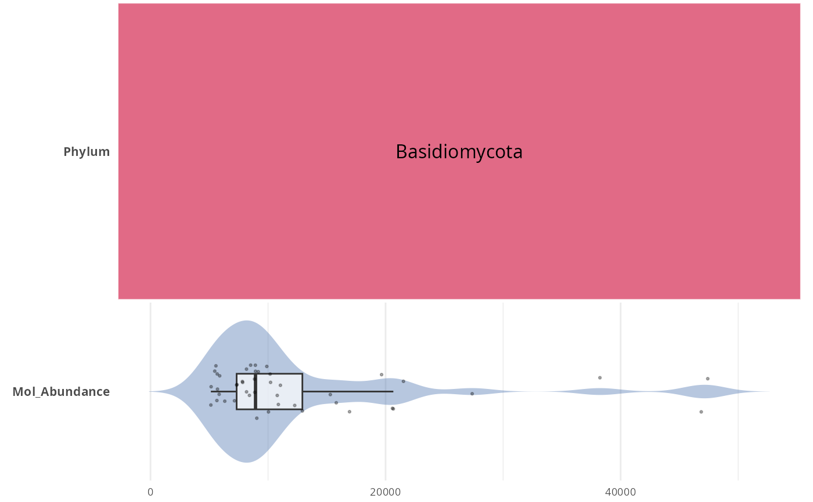

Plot a compact distribution overview of tax_table columns
Source: R/plot_tax_table_pq.R
plot_tax_table_pq.Rd
Build one compact horizontal row per column of a phyloseq's tax_table
(via tidypq::tax_table_to_df()), stacked into a single tight figure so
many columns can be scanned at a glance. Factor/character/logical columns
become a single stacked bar spanning the full row: each category is a
colored zone sized by its proportion of the total, NA is a dark grey
zone, and categories that individually represent less than threshold of
the total are drawn in white and left unlabeled (only zones at or above
threshold get a small text label). Numeric columns become a thin
horizontal raincloud (violin + boxplot + jittered points).
Arguments
- physeq
(required) A phyloseq::phyloseq or phyloseq::taxonomyTable object.
- ...
Columns of the tax_tableto plot. Supports tidyselect helpers, including regex-based ones such asdplyr::matches("^Guild"). Defaults to every column when omitted.- threshold
(numeric, default 0.02) For factor/character/logical columns, categories whose proportion of the total is below
thresholdare drawn in white and left unlabeled;NAis exempt (always dark grey, always labeled when non-zero).- combine
(logical, default TRUE) If TRUE, stack the per-column rows into a single patchwork::patchwork figure. If FALSE, return a named list of ggplot2::ggplot objects (one per column).
Value
A patchwork::patchwork object (default), or a named list of
ggplot2::ggplot objects when combine = FALSE.
Examples
data(data_fungi_mini, package = "MiscMetabar")
plot_tax_table_pq(data_fungi_mini)

# Restrict to a subset of columns, mixing exact names and tidyselect
plot_tax_table_pq(data_fungi_mini, Phylum, Class, dplyr::matches("^Guild"))

data_fungi_mini <- tidypq::mutate_taxa_pq(
data_fungi_mini,
Mol_Abundance = phyloseq::taxa_sums(.)
)
plot_tax_table_pq(data_fungi_mini, Phylum, Mol_Abundance)
